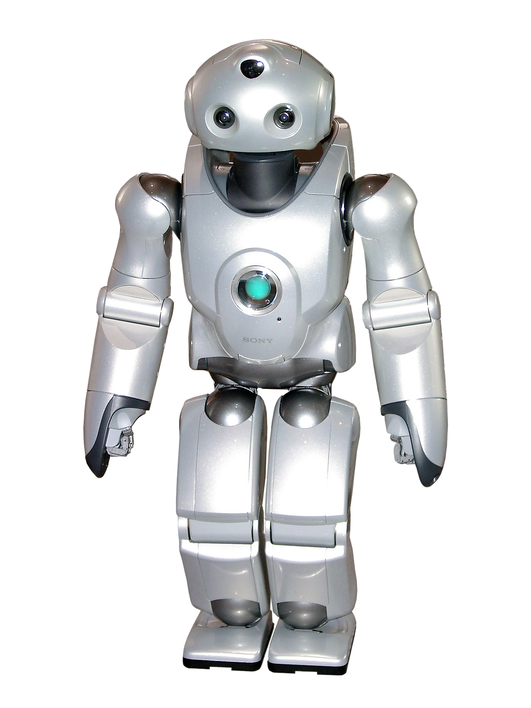

Update - LLMs in research: A round up of services

What sorts of LLM systems exist:
A solution for most of their problems
LLMs exist, they are being used extensively and often in places that could do without them. At this point you have probably heard from many friends, family, and colleagues “Just ask ChatGPT!”, seen many services find any way to shoe it in, and news articles insisting they are the future. There is also a lot of coverage on the concerns about their use, and there are a lot of concerns with LLM use; over-reliance and brain atrophy (Kosmyna et al.), environmental impact (environmental impact, emissions, water theft, energy usage estimates), security issues and privacy concerns(survey of LLM security and privacy, report on LLM privacy risks and functionality), ignoring of copyrights (summary of copyright cases against OpenAI), and the fact they will often just lie. However, they are useful tools when used responsibly.
“A responsible alternative to existing LLMs”
– GPT-NL
Resposibility is a big word and in particular when referring to something that the 2023 paper by Eloundou et al. state could perform at least 50% of tasks for 19% of jobs. However, knowing the current standard business model of Silicon valley the capabilities are usually played up for the interest of investors. On the flip side there are plenty of open source LLMs available these days with the 235B patameter Qwen3 ranking joint 5th on the huggingface ranking and DeepSeek coming in at 8th (as of 20/08/2025).
In fact any of these open source models can circumvent the security and privacy concerns (and partially environmental if you have green energy at home) by running them locally. “But I don’t have a server stack at home” I hear you lament. Do not fear, there is of course a solution for this, Jan is an open source tool for importing and running open source models on your local machine. It is best to stick to the or tiny models, however, with a rule of thumb of 1B tokens per free GB of RAM. It is worth noting that making use of a graphics card will mean you can run larger models than this. It might not be quite as fast as online options, but you at least know that your conversations are offline and you could even block the application’s access to the internet completely as an additional measure.
Perhaps you prefer a coding buddy in your IDE over the messenger format, but would prefer to keep your work from Microsoft’s copilot? In that case you can check out OpenCoder to use in VS Code or VSCodium to support you directly as you code.
What about closer to home? What is happening here in the EU? Well, Mistral, Europe’s premier LLM model sits at a disappointing 22nd place, though it does have a free tier with access to their largest models. Generally these models tend to primarily trained on Enlgish language data leaving some languages neglected or using a translator layer. This has only further widens the gap between richer and poorer countries. to combat this the EUROLLM is trained on text from all 24 official languages of the EU. If you want a level of control beyond language and fine tuning you could build your own model from scratch using data from the OPENEUROLLM group. They are currently working with EUROLLM to address the ” lack of availability high-quality pre-training data in multilingual settings ” by creating large swathes of synthetic data in various languages. This itself brings up questions of quality, but the production and use of synthetic data is becoming wider spread all the time.
Yet closer to home and we find GPT-NL, a Dutch language & ethically trained model. Touting themselves as “A responsible alternative to existing LLMs” they claim that all data used in the training has been lawfully obtained putting the copyright concern to bed for this particular model. It also provides insight into why certain decisions were made regarding data and the training process itself.
“What about here, at the VU?” you ask, well currently the Network Institute has Nebula a small team working on providing LLM services on a local server. The project is still growing and in an early stage, but currently (as of 20/08/2025) boasts 5 different models from 4 providers ranging from 1.5-20B in size. It has a familiar messenger setup and no conversations are stored on their servers to improve privacy measures. For those wishing to use the models are part of their workflow rather than to query directly themselves you can access the Nebula server using their API (based on the OpenAI standard). Accounts are currently limited, so you will need to request one directly from the team.
TL;DR
LLMs have a lot of issues, from environmental to potential brain atrophy of users, but there are far more models than what silicon valley has to offer. From Jan for running models locally and to Nebula at the VU serving various open source LLMs at from the Network Institute.
Further reading
To read about how to install the OpenCoder model to replace Co-Pilot read here.